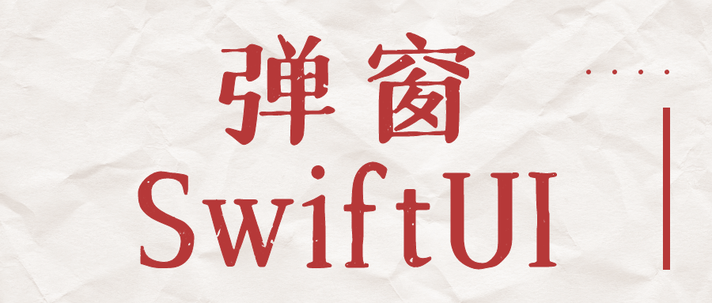
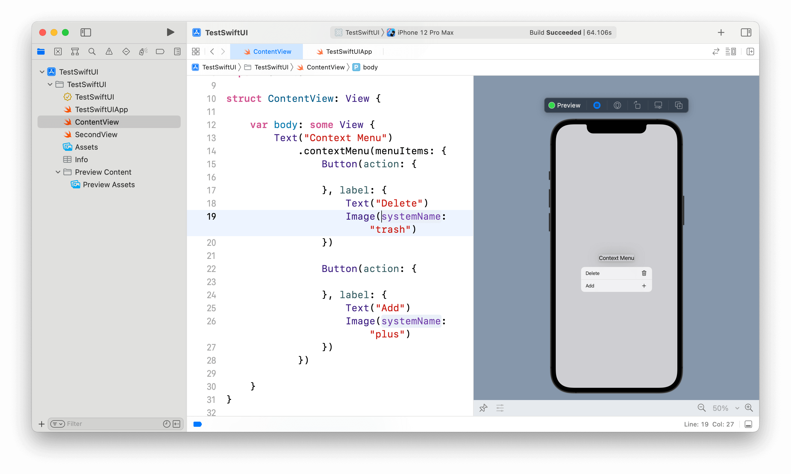
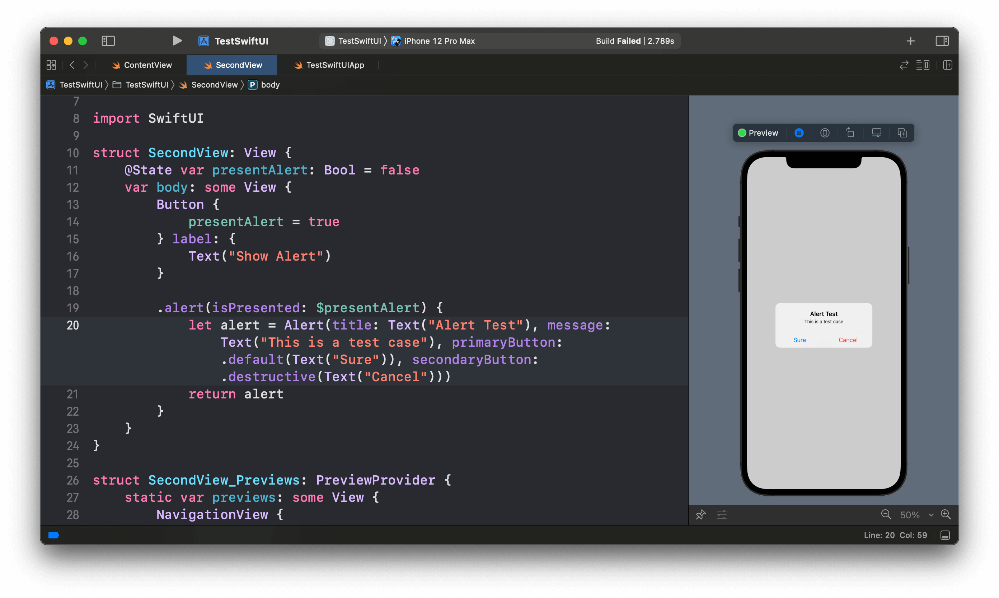
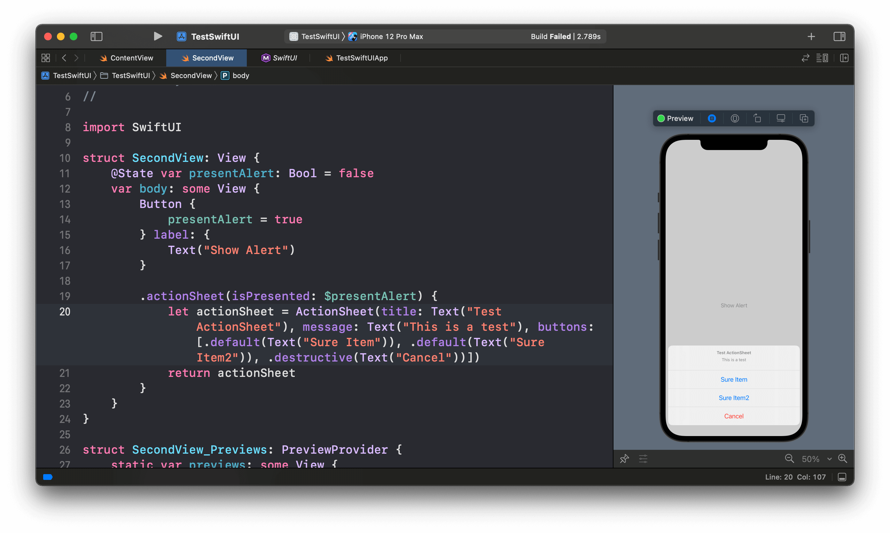

SwiftUI弹窗大全：Menu/Alert/ActionSheet
一个iOS应用中必然会有很多的弹窗，UIKit中的弹窗主要是UIMenuController、UIAlertView和UIActionController，到了SwiftUI框架中也有对应的弹窗，它们分别是contextMenu、alert和actionSheet三个ViewModifier(视图修改器)。

到公众号【iOS开发栈】学习更多SwiftUI、iOS开发相关内容。
contextMenu
1 | /* 下面两种方式是等价的 */ |
contextMenu两种初始化方式对应上面例子中的两种方式，第一种public func contextMenu<MenuItems>(_ contextMenu: ContextMenu<MenuItems>?) -> some View where MenuItems : View是用一个ContextMenu实例作为参数；第二种public func contextMenu<MenuItems>(@ViewBuilder menuItems: () -> MenuItems) -> some View where MenuItems : View的参数是一个使用@ViewBuilder修饰的闭包。
1 | public struct ContextMenu<MenuItems> where MenuItems : View { |
由ContextMenu的初始化方法可以看出，要初始化这个类也是需要一个用@ViewBuilder修饰的闭包，所以上面的两种menuContext使用方式并没有本质区别。或者说第二种是第一种的简便方法，类似于这样的用法在SwiftUI中有很多。
下面是一个完整的例子：

长按”Context Menu”文本后会弹出一个Menu菜单，其中每个选项都是一个按钮，因为这是一个示例程序所以按钮的事件没有写，在你的项目中可以加上对应的事件。
alert

1 | var presentAlert: Bool = false |
alert这个视图修改器接受两个参数，第一个是Binding<Bool>类型，我们可以通过在一个被@State属性包装器包装的属性前加$来作为这个参数，详情可以参考属性包装器和@State
第二个参数是一个返回值是Alert类型的闭包，因此我们这里需要创建一个Alert的示例作为返回值。
actionSheet

1 | var presentAlert: Bool = false |
actionSheet和上面的alert用法非常相似，第一个参数是一个Binding<Bool>类型的变量，presentAlert是一个被@State属性包装器包装的Bool类型变量，在这个变量前面加$可以生成一个Binding类型的变量。
第一个参数是一个返回值是ActionSheet类型的闭包，因此需要创建这个类型的实例并将它作为返回值。buttons参数是一个ActionSheet.Button类型的数组，因为这是一个实例程序，Button并没有添加任何的事件，如果需要可以自行添加。
到公众号【iOS开发栈】学习更多SwiftUI、iOS开发相关内容。
总结
这篇文章对SwiftUI框架中的contextMenu、alert和actionSheet做了全面的说明，你现在对这3种弹窗肯定有了全面的认识，那就在项目中用起来吧。👍